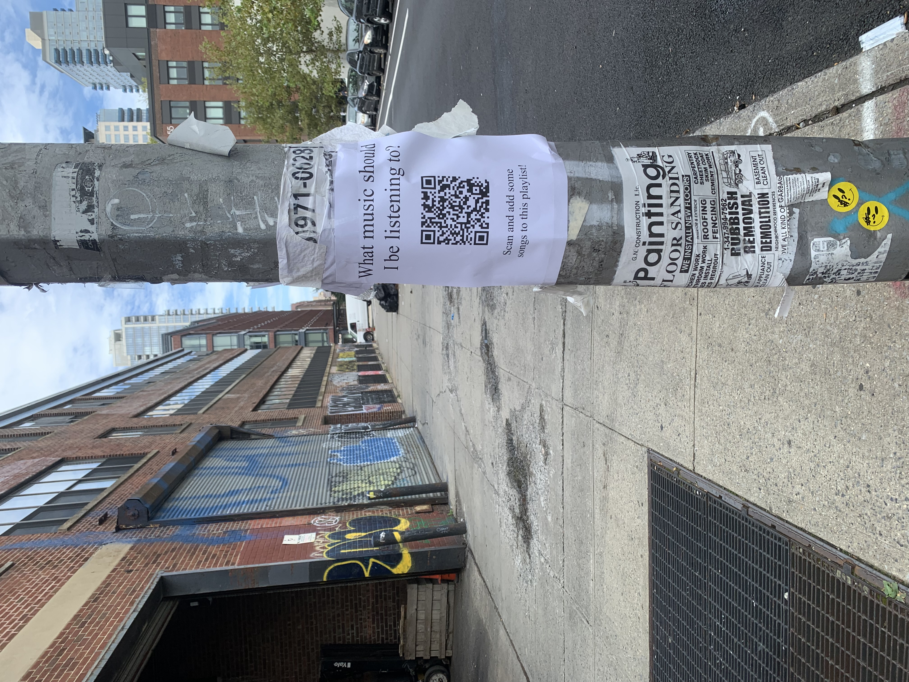
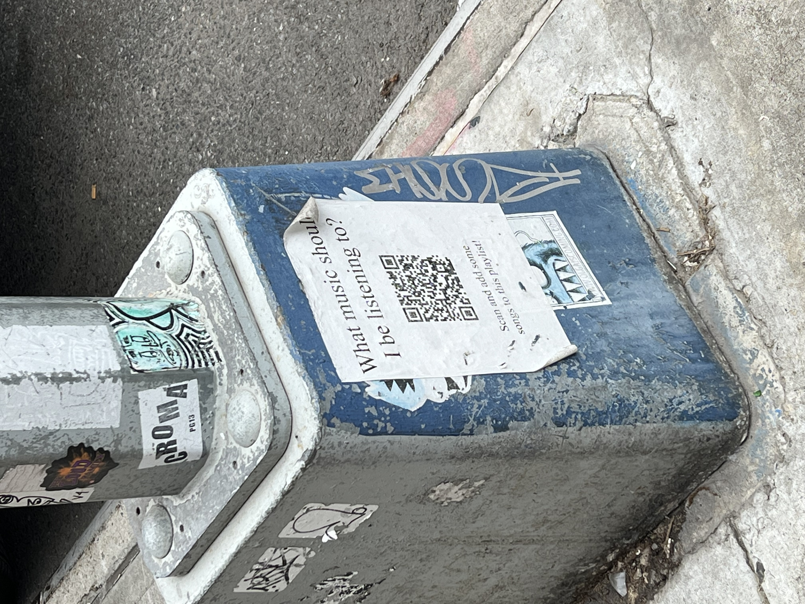

At my friend
Maya's birthday/goodbye-going-to-grad-school party in 2021, she used a QR code linked to an open shared Spotify playlist that everyone could contribute to in lieu of a DJ. It was wonderful, and I'd never put together how easy it was to do something like that until then. A few weeks later, frustrated with how bad the algorithmic- and revenue-driven playlist culture is on Spotify, I decided to create a QR code linked to a playlist on a new Spotify account, and posted four signs on the street inviting anyone to contribute to it.

It now has almost 13 hours of music, all provided by random passers-by. I wouldn't really call this project a success, or really even a project, but an attempt. I don't really like Spotify. It treats artists terribly, and worse, doesn't see that as a problem. I spent a lot of time wondering if I could interact with the platform differently, use it in a way that might feel good. I did not succeed, and stopped using the service not long after. But here's a link to the
playlist—
You can download a PDF of the QR code sign
here
